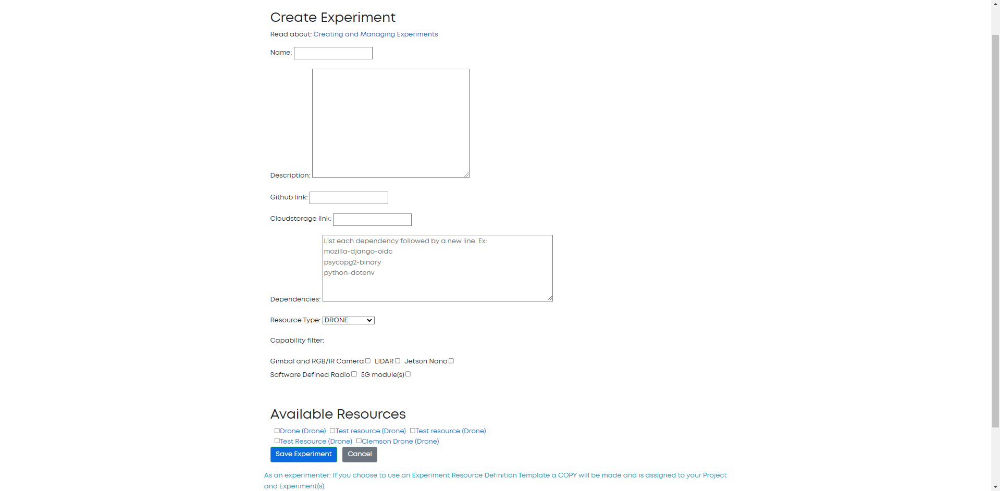
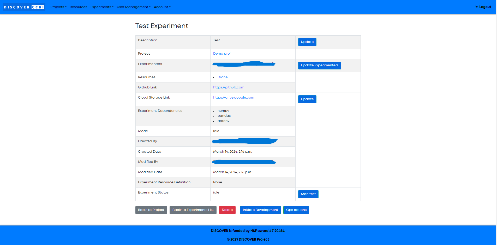

Experiments¶
Experiments are where principal actions take place inside the Discover portal. Experiments contain all of the code necessary to take some action using Discover hardware. The primary experiment flow for Discover is shown below.

Users create experiments based on our GitHub templates, and submit their code using the Discover portal. The portal notifies an administrator, who can accept or decline the experiment. Once an experiment has been accepted and scheduled, an operator is notified. The operator will manage the operation of the experiment on the hardware, as well as any actions that need to be taken in the portal. All portal actions will result in a email being sent to the experimenter. Additionally, the portal will contact the server at the experiment site, which will build all of the code for the experiment. The requested nodes will receive experimental code, in the form of a Docker container. Then, the operator can run the code, and submit results back to the user.
Experiment Creation¶
To create an experiment, navigate to the Experiments tab within the project to which the experiment pertains. Click the Add Experiment button.

Next, you will be presented with the experiment creation screen. Here, you will name your experiment, provide the experiment description, a GitHub link to your experiment source code, a cloud storage link to store the experiments results, dependencies your experiment will use, and resources your experiment will run on.
NOTE: The GitHub repository you provide for your experiment must conform to our repository templates.
Click Save Experiment to create the experiment.

Experiment Initiation¶
As you develop your experiment, you can add anyone from within your project as additional experimenters using the Update Experimenters button, change the description and name using the Update button, and update the cloud storage link using the Update button.

Final Steps¶
Once you have initiated development, you can still change your experiment description and the experimenters. Once the experiment mode changes to TESTBED these are locked in. Additionally, after you have initiated development, you should update the cloud storage link immediately. This link directs the operator to some cloud storage website such as Google Drive or Dropbox. The operator will deposit the results of your experiment in this location once it has been completed. Make sure that the operator has the proper permissions to upload files to the cloud storage site by using the link.

Additional Information¶
The Terminate button will not delete your experiment, it will only send it back to the Idle mode, which is the mode the experiment began in before you clicked on Initiate Development. Experiments should be terminated when changes to your code need to be made after you have clicked Initiate Development.
You will receive emails whenever something happens with your experiment. Emails can be notifying you that your experiment has been deployed, that there is some sort of issue with your experiment, or that your experiment has finished. Emails will be sent to the address(es) associated with all experimenter(s).